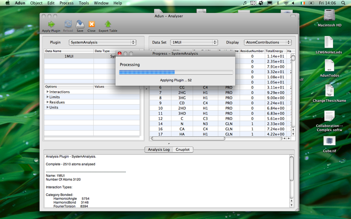

Applying a Plugin
This page takes you through the steps involved in analysing data using plugins.

To apply a analysis plugin:
- Select the data you want to analyse (for example a system) in the database browser.
- Click 'Object->Analyse' from the menu. This will load the data into the Analyser
- The data will appear in the Analysers loaded objects table - select it.
- The plugins that can operate on the data will appear in the 'Plugin' drop down list. Select the one you want to use. In the screenshot the 'SystemAnalysis' plugin is selected.
- Click the 'Apply' button in the toolbar. A progress indicator appears showing you the progress of the analysis.
- Once the plugin is finished it will return the results. Any data sets returned are shown in the data table. Other information returned will appear in the Analysis log.